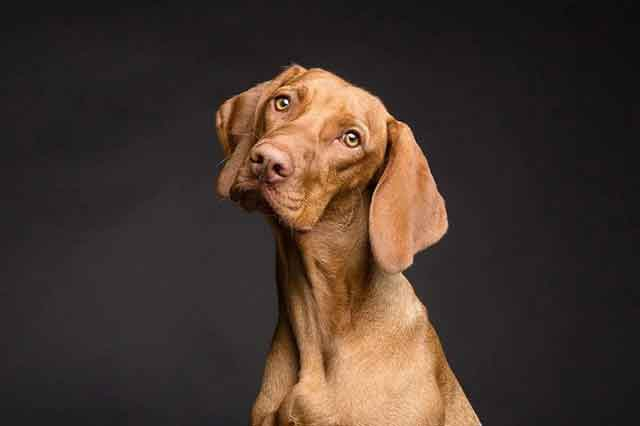
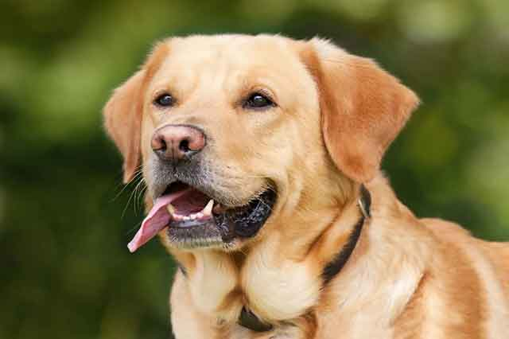
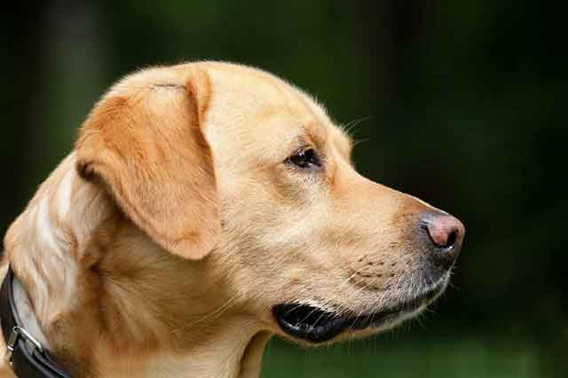
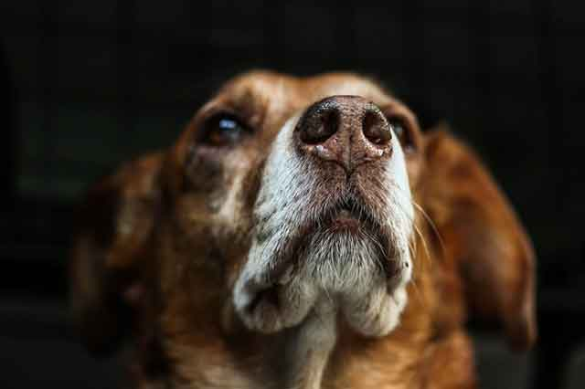
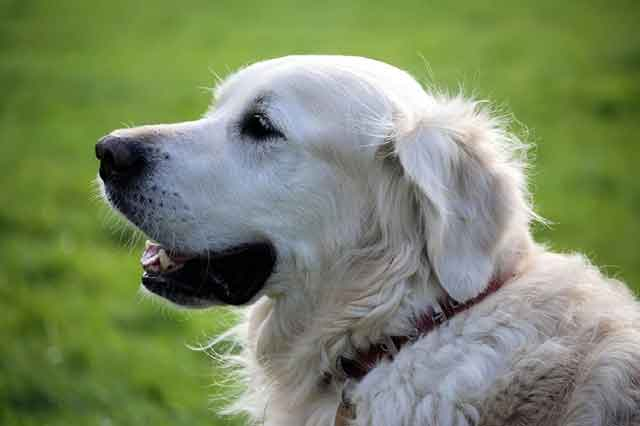

노령견 더욱더 주의가 필요해요! 변화를 위한 TIP
사람도 늙고 반려견도 늙습니다. 사람도 늙으면 신체 노화와 행동 반응이 느려지듯 반려견 역시 노령견이 되면 신체 노화는 물론 행동 반응이 느려지고 각종 질병에 취약해집니다. 그만큼 관리가 필요하다는 신호겠죠! 노령견이 됐다면 더욱더 주의가 필요합니다. 신체 변화를 위한 관리 방법 TIP을 알려드립니다!
"노령견, 언제부터일까?"
노령견이라는 기준은 반려견의 크기에 따라 달라집니다. 소형견일 경우 노령견이 되는 시점을 7~8살쯤으로 보지만, 중형견, 대형견으로 크기가 커진다면 노령견이 되는 나이도 점차 줄어들게 됩니다. 45kg 이상 되는 대형견은 5살 정도 되면 노령견이 됐다고 할 수 있습니다.
"노령견의 신호, 이렇게 알 수 있어요"
1) 털이 빠지고 윤기를 잃어요.
나이가 들면 세포의 노화, 면역력 약화 등의 이유로 털이 잘 빠지고 부분 탈모를 보이는 모습을 보입니다. 털을 밀더라도 다시 잘 자라지 않을 수 있습니다. 멜라닌 색소의 부족으로 털의 색이 빠지고 윤기가 점차 줄어드는 것을 볼 수 있습니다.
2) 각종 질병은 물론 피부병에 취약해져요.
호르몬 분비가 줄어들고 균형을 잃게 되면서 각종 피부병은 물론 각종 질병에 노출되기 쉬워집니다. 면역력이 떨어지고 이전보다 자신을 보호하는 능력을 잃게 되는 것이죠. 따라서 어린 강아지였을 때보다 조금 더 빠른 주기로 건강검진을 해주는 것이 좋습니다. 병을 빠르게 예방할수록 고통은 줄고 견생 또한 윤택해질 수 있습니다.
3) 태도의 변화가 찾아와요.
사람도 호르몬이 줄면서 '갱년기'를 겪게 됩니다. 반려견도 마찬가지로 노령견이 되면서 호르몬 변화에 따라 감정의 변화를 겪게 됩니다. 평소보다 예민해지고 자주 화를 냅니다. 그리고 평소와는 다르게 반항적인 모습을 보일 수 있습니다.
4) 잠이 많아지고 움직임이 느려져요.
신체 노화는 활동성이 높던 강아지도 느리고 약하게 만듭니다. 근육이 약해져 이전보다 빨리 달릴 수 없고, 조금만 움직여도 금세 피로감을 느껴 잠으로 휴식을 취하려고 합니다.
5) 먹는 양이 줄고, 간식에 대한 흥미가 떨어져요.
간식을 무척 좋아하던 강아지라도 노령견이 되면 음식에 대한 흥미가 떨어질 수 있어요. 평소 먹던 양도 줄고, 입이 짧아지는 모습을 보이기도 합니다. 이빨 역시 약해져 씹는 것조차 꺼리기도 합니다.
노화를 겪는 것은 선택이 아닌 필연적입니다. 그래서 강아지의 신체 노화가 오는 것을 막을 수 없죠. 그래서 남은 견생의 질을 높이고 행복한 삶의 마무리를 할 수 있도록 반려인의 사랑과 관심 그리고 끝까지 책임지려는 모습이 중요합니다. 또한, 노화를 막을 수는 없지만, 노화 현상을 빠르게 감지해 대처한다면 충분히 건강한 신체 관리를 할 수 있다는 점 잊지 마시길 바랍니다!
[출처] 노령견 더욱더 주의가 필요해요! 변화를 위한 TIP ｜ 작성자 브런치